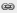

Maps in McIDAS-V are shown using the Map Display Controls. There are two ways these controls are used: for the default background maps and for a user created map display. The control window is composed of two tabs, Maps and Lat/Lon.
The Maps tab lists the set of available maps. You have the ability to select which maps are displayed, as well as how they are displayed:
Image 1: Maps Tab of the Map Controls Window
- Apply changes to all visible maps - Applies any changes to only the one map you modify. When clicked, this icon changes to , where any change made to one map will be applied to all of the currently visible maps.
- Maps - Lists the set of currently loaded maps. The maps displayed in the Main Display window are are checked.
- - Sets the thickness of the map line.
- - Sets the style of the map line.
- - Sets the color of the map line.
- Fast Rendering - Save rendering time by not checking for projection seam crossings. Some maps display better when fast rendering is turned on, others display better when it's turned off. If a map displays poorly (e.g., has missing line segments), try switching its fast rendering settings to see if it fixes the problem. See the Fast Rendering section of the User's Guide for more information on this feature.
- Move the map up/down - Shifts the map up and down in the list.
 Remove the map - Removes the selected map from the list.
Remove the map - Removes the selected map from the list.- Load this map as a data source - Places the selected map in the Field Selector tab of the Data Explorer, where you can display the map with the Map Display or with the Omni Control display. This feature allows for adding multiple maps to one tab in the Main Display window. Adding a map as a data source also allows you to utilize the Maps->3D Map formula to draw a map over a topography field.
- Position - Sets the vertical position of the maps and latitude/longitude lines and labels. This option is available through both the Maps and Lat/Lon tabs.
The Lat/Lon tab allows the user to set the visibility of and control the latitude/longitude lines and labels:
Image 2: Lat/Lon Tab of the Map Controls Window
- Lines
- Apply changes to all lat/lon lines - When this is selected, most changes made made to either the latitude or longitude lines will apply to both, making the latitude and longitude lines identical. Click the link icon to make the lines unlinked (), so that a change made to one line will not be applied to the other. The Relative to fields are not linked.
- Interval - Sets the spacing between the lines, in degrees. For fewer lines, set this value higher, and for more lines, set this value lower. The valid range for Latitude is 0 - 180. The valid range for Longitude is 0 - 360.
- Relative to - Sets a value, in degrees, that one of the lines will be drawn at. From this line, other lines will be drawn in both directions of the Relative to line at an increment specified in the Interval field. The valid range for Latitude is -90 - 90. The valid range for Longitude is dependent on the 0 - 360 setting. With 0-360 turned on, the valid range is 0 - 360 and with 0-360 turned off, the valid range is -180 - 180.
- Width - Sets the width of the lines.
- Style - Sets the style of the lines. This can be a solid line, dashes, points, or dashes and points.
- Color - Sets the color of the lines.
- Fast Render - Turns on and off Fast Rendering for lines. This option can be useful dependent on the projection used in the Main Display window, as there are times the lines can display with gaps and not properly connected.
- Labels
- Apply changes to all lat/lon labels - When this is selected, any change made made to either the latitude or longitude labels will apply to both, making the latitude and longitude labels identical (with the exception of Relative to, at Longitudes/Latitudes, and Alignment which are never linked). Click the link icon to make the labels unlinked (), so that a change made to one label will not be applied to the other.
- Interval - Sets the spacing between the labels, in degrees. For fewer labels, set this value higher, and for more labels, set this value lower. The valid range for Latitude is 0 - 180. The valid range for Longitude is 0 - 360.
- Relative to - Sets a value, in degrees, that one of the labels will be drawn at. From this label, other labels will be drawn in both directions of the Relative to label at an increment specified in the Interval field. The valid range for Latitude is -90 - 90. The valid range for Longitude is dependent on the 0 - 360 setting. With 0-360 turned on, the valid range is 0 - 360 and with 0-360 turned off, the valid range is -180 - 180.
- At Longitudes - Sets the longitude line(s) to draw the latitude labels at. You can specify more than one value by separating them with a semicolon (;). The valid range is dependent on the 0 - 360 setting. With 0-360 turned on, the valid range is 0 - 360 and with 0-360 turned off, the valid range is -180 - 180.
- At Latitudes - Sets the latitude line(s) to draw the longitude labels at. You can specify more than one value by separating them with a semicolon (;). The valid range is -90 - 90.
- Color - Sets the color of the labels.
- Alignment - Sets the alignment point of the location of the labels with respect to the actual location of the point. This can be useful to position the label at a location where it is not interfering with a latitude or longitude line. These Alignment options are given in geographical coordinates (ex. NE = northeast, etc).
- Font - Sets the font, style, and size of the labels.
- Format - Sets the format of the labels. You can select a variety of decimal, or DMS (Degrees, Minutes, Seconds) formats.
- 0-360 - Uses 0 to 360 degrees to label longitudes when selected, instead of the standard -180 to 180. This changes the longitude labels in the Main Display, as well as the longitude values in the Longitude Lines Relative to, At Longitudes, and Longitude Labels Relative to fields.
- Example - Set both the Latitude and Longitude Line Interval to 15 degrees and Relative to to 0 degrees. This will draw latitude and longitude lines at 0 degrees Latitude and Longitude, and draw another line at 15 degrees either direction (..., -30, -15, 0, 15, 30, ...). Set the both the Latitude and Longitude Labels Interval to 20 degrees and Relative to to 0 degrees. This will draw labels at 0 degrees and draw another label at 15 degrees in either direction (..., -40, -20, 0, 20, 40, ...).
Many of the menu items seen utilizing this display are standard options that can be found in the Menus section of the Layer Controls page. However, there are some options that are unique to this display.
The File menu has this unique option:
- Default Maps - The Save as the Default Map Set menu item will save the maps you have selected and reopen them next time you open McIDAS-V. This menu item creates a maps.xml file in your McIDAS-V directory that includes the name of the map, its category, and other display settings. The Remove Local Map Defaults menu item will undo any saved changes by the user, and will revert back to the initial default map display of McIDAS-V. This removes the maps.xml file in your McIDAS-V directory. Note that this option will take a restart of McIDAS-V for the changes to take effect.
The Edit menu has these unique options:
- Add Your Own Map... - Opens an Add a map window, where you can enter a URL of a map or select a shapefile you have locally. Here, you can name the map, choose the category it will list under, and select the style, color, and width of the map lines. This can be used in conjunction with Save as the Default Map Set, where a user can add their own map, save the default map set, and then this map will be retained in subsequent sessions of McIDAS-V.
- Add System Map... - Allows for selecting a list of different system maps to add to the list of maps in the Maps tab.
The View menu has this unique option:
- Maps - Allows you to select which maps are checked in the Maps tab, and thus what maps are displayed in the Main Display window.